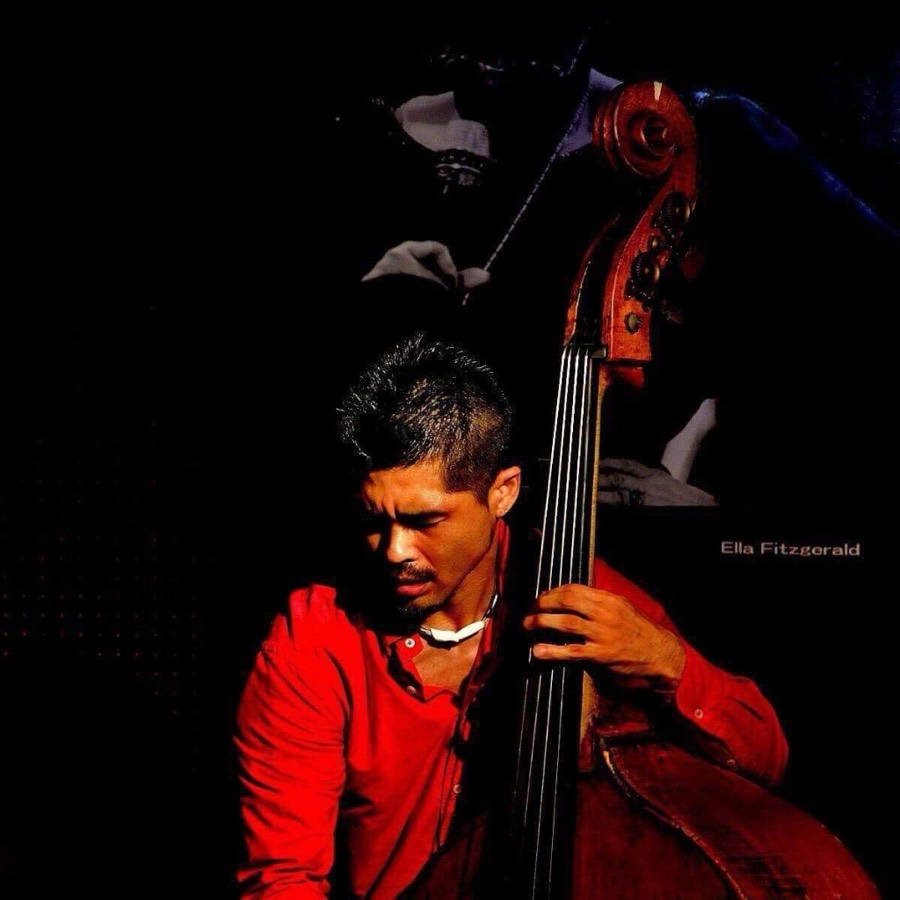
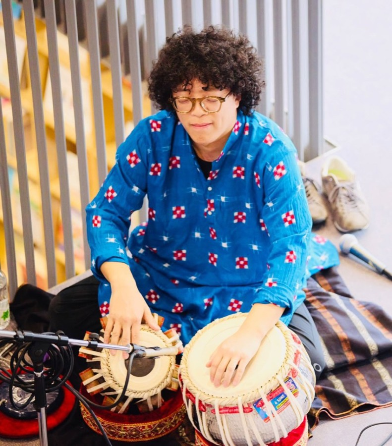
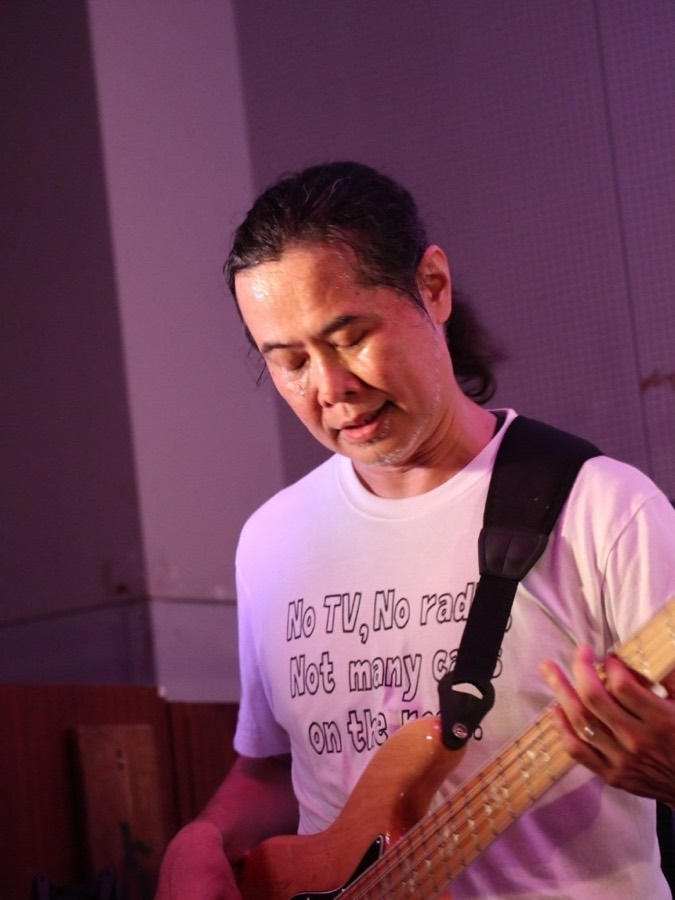
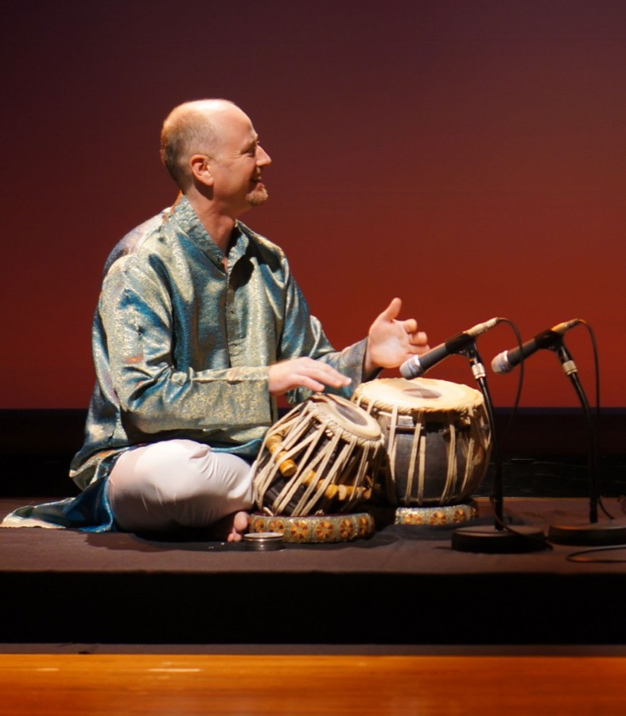

岡本博文
Guitar
ギタリスト。ジャズを原点に多ジャンルで活動。1998年『Jawango』でCDデビュー後、『Okamoto Island』名義で5作品を発表。近年は高野山の映像作品や、HIBINO『INORI』の制作にも携わる。
WebsiteThe People
岡本博文
Guitar
ギタリスト。ジャズを原点に多ジャンルで活動。1998年『Jawango』でCDデビュー後、『Okamoto Island』名義で5作品を発表。近年は高野山の映像作品や、HIBINO『INORI』の制作にも携わる。
Website西村泳子
Violin
京都市立芸術大学音楽学部卒業。3歳でヴァイオリンを始め、6歳で協奏曲を演奏。クラシックを基盤に、アイリッシュやポップスなど幅広いジャンルで活躍。ユニット「Lalo」でCD5枚を発表し、TV-CFや企業PVに楽曲提供。日本レコード大賞企画賞を受賞。
Website
ACOON HIBINO
Piano
1961年滋賀県生まれ。関西学院大学卒。京都・かめおか観光PR大使。第57回レコード大賞企画賞受賞。奉納演奏は天河大辨財天や仁和寺など多数。画号TSURUGIとして画家活動も行い、産経新聞「暮らしの百科」表紙を2年間担当している。

山村誠一
Percussion
80年代よりパーカッショニストとして活動。90年代よりスティールパンに着手し、押尾コータローとのDUOアルバムからはラジオテーマ曲、NHKテレビの背景曲などで使用され、有線放送のパンチャンネルには約400曲ライブラリーされている。劇団四季「ライオンキング」大阪公演に楽師として700ステージ出演。2021年ドキュメンタリー映画「明日をへぐる」の音楽担当。2023年NHK連続テレビ小説「らんまん」挿入曲演奏。独奏からオーケストラまで複数の楽団を主宰。
WebsiteCollaborators

嶌田憲二
Bass
1993年奨学金を得てボストン・バークリー音楽院に入学。1996年 Jhon Neves Memorial Scholarship 受賞。1997年バークリー卒業。複数のリーダーアルバムをリリース。

上坂朋也
Tabla
大学在学時よりコルカタでタブラを練磨。パンジャーブ流派・中東音楽にも精通。2012年台北インド舞踊祭典に招致。2022年上賀茂神社での奉納演奏。

長谷川晃
Bass
1971年生。名古屋生まれ、京都在住のエレクトリックベーシスト。90年代中盤から演奏活動開始。コンテンポラリージャズバンド Vermilion Field でメジャーリリース。SAKAKI MANGO & LTSS で南半球最大のフェス Bush Fire に出演。自身のリーダートリオを中心に、近藤房之助、円道一成、佐藤宣彦のサポートや、ジャズ・ゴスペル・R&B など様々なシーンで活動。

グレン・ニービス
Tabla — Glen Kniebeiss
オーストラリア出身。メルボルン大学ヴィクトリアン・カレッジ・オブ・アーツ音楽科卒業。1998年よりタブラを学び始める。インドではウスタッド・アントニー・ダース、パンディット・イシュワラール・ミシュラ、パンディット・ラッチュ・マハラージに師事。オーストラリアのフェスティヴァルやコンサートのほか、インド、オランダ、デンマークなどでも演奏。プロのギタリストでもあり、京都の自宅でギターとタブラの教室を開いている。
Website